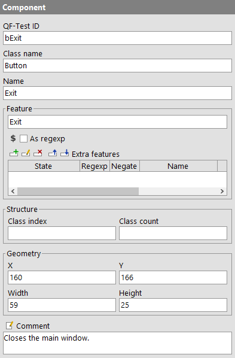

| Version 6.0.3 |
When 'Component' nodes are used in place of SmartID (Preview)s QF-Test stores the recognition criteria of the recorded components in 'Window' and 'Component' nodes, whose hierarchical order matches the structure in the GUI of the SUT. These nodes are located below the 'Windows and components' node. The following image shows a section of the 'Component' nodes that are part of the QF-Test main window:
|
|  |
||
|
| Figure 5.9: Component hierarchy of a Swing SUT | ||
In the detail area of a 'Component' node, the Recognition criteria are stored. In addition, it contains the 'QF-Test ID' attribute. This is the reference ID for all nodes in the tests that refer to that component.
|
|  | ||
|
| Figure 5.10: Component node | ||
Each node in a test suite has a 'QF-Test ID' attribute, which does not have any special meaning and is managed automatically for most nodes. For 'Component' nodes on the other hand, the 'QF-Test ID' has an important functionality. Other nodes with a target component, like events or checks, have the attribute 'QF-Test component ID', which refers to the 'QF-Test ID' of the 'Component'. This indirect reference of GUI elements is very useful: If the interface of the SUT changes in a way that QF-Test cannot automatically compensate for, only the 'Component' nodes of the unrecognized components need to be adjusted. Then, the test will run again.
It is very important to understand that the 'QF-Test ID' of a 'Component' is only an artificial concept for the internal use in QF-Test, not to be confused with the attribute 'Name', which serves to identify the component in the SUT, which will be explained further in the next section. The actual value of the 'QF-Test ID' is completely irrelevant and has no relation to the GUI of the SUT. The only important thing is that the 'QF-Test ID' is unique and that other nodes correctly refer to it. On the other hand, the 'QF-Test ID' of the 'Component' node is displayed in the tree view, and not only for the 'Component' itself, but even for events and other nodes that refer to it. That is why 'Components' should have expressive 'QF-Test IDs' that indicate the actual component in the GUI.
When QF-Test creates a 'Component', it has to automatically assign it a 'QF-Test ID'. It does its best to construct a meaningful identifier from the available information. Details about this can be found in Generating the component 'QF-Test ID'. Should a generated 'QF-Test ID' not be to your liking, you can change it. If you choose a value that is already taken QF-Test will output a warning. If you have already recorded events referring to this component, QF-Test offers to automatically adjust their 'QF-Test component ID' attribute. This automatic mechanism does not work for references with variables in the 'QF-Test component ID' attribute.
Note A frequent mistake is to change the attribute 'QF-Test component ID' of an event
instead of the 'QF-Test ID' itself.
This destroys the connection between event and its target component,
leading to an UnresolvedComponentIdException.
So, you should only do this if you actually want to change the target component.
Frequently, tests are assembled from existing procedures. For this it is often helpful to use the process described in Recording components. The 'QF-Test component ID' recorded this way will be stored in the operating system clipboard to be easily inserted into the corresponding procedure parameter.
Using Recording components you can also first create the entire component structure of the SUT to get an overview and assign sensible 'QF-Test IDs'. During recordings, theses 'QF-Test IDs' will then be used.
| Last update: 9/6/2022 Copyright © 1999-2022 Quality First Software GmbH |